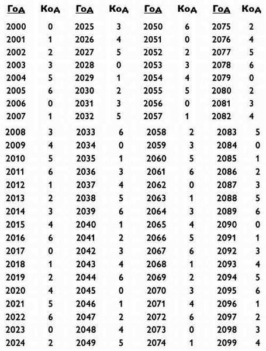
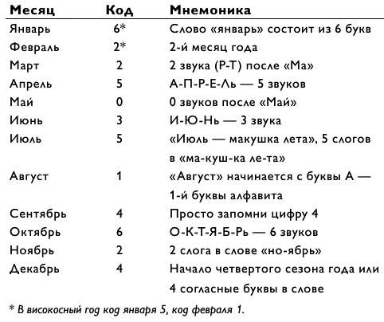
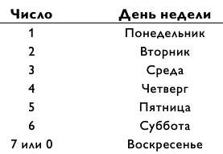

Теперь вычислим день недели для любой даты в 2006 году.
После этого опишем 2007 год, затем 2008-й и т. д., до конца вашей жизни. Когда все даты из будущего будут определены, мы заглянем в прошлое и вычислим дни недели для любой даты из 1900-х или любого другого века.
Каждому году присвоен кодовый номер, и в случае 2006 года таковым будет 0.
Чтобы вычислить день недели, нужно просто сложить код месяца, день месяца (дата) и код года. Таким образом, для 3 декабря 2006 года рассчитываем
Код месяца + Дата + Код года = 4 + 3 + 0 = 7.
Следовательно, эта дата приходится на 7-й день недели, то есть воскресенье
Что вы скажете о 18 ноября 2006 года? Поскольку код ноября — 2, имеем:
Код месяца + Дата + Код года = 2 + 18 + 0 = 20.
Так как дни недели повторяются каждые семь дней, нужно от ответа (20) отнять любое кратное 7 (то есть 7, 14, 21, 28, 35, .), и это никак не повлияет на номер дня недели. Итак, заключительное действие сводится к вычитанию из полученной суммы наибольшего кратного 7. В данном случае получаем 20–14 = 6. Следовательно, 18 ноября 2006 года приходится на субботу.
Что можно сказать о 2007 годе? Точнее, что происходит с вашим днем рождения при переходе от одного года к следующему? Большинство годов состоят из 365 дней, а так как 365 = 7 х 52 + 1, то день недели вашего рождения сдвинется на один день вперед. Если между вашими днями рождения 366 дней, то день недели вашего рождения сдвинется на два дня вперед. Поэтому для 2007 года мы вычисляем день недели как и раньше, но применяем код года, равный 1. Далее следует 2008 год — високосный. (Високосный год бывает раз в четыре года, так что 2000, 2004, 2008, 2012… 2096 — високосные годы XXI века.) Поэтому для 2008 года его код увеличивается на два и равен 3. Следующий 2009 год не високосный, поэтому код увеличивается на 1 (и равен 4).
Таким образом, для 2 мая 2007 года, например, имеем:
Код месяца + Дата + Код года = 0 + 2 + 1 = 3.
Следовательно, данная дата приходится на среду.
Для 9 сентября 2008 года имеем:
Код месяца + Дата + Код года = 4 + 9 + 3 = 16.
Отнимая наибольшее кратное 7, получаем 16–14 = 2, значит, эта дата приходится на вторник.
Но для 16 января 2008 года, поскольку этот год високосный, код месяца январь будет равен 5, а не 6. Поэтому:
Код месяца + Дата + Код года = 5 + 16 + 3 = 24,
и, следовательно, нужная дата попадает на день 24–21 = 3, который является средой.
Мы перечислили все коды для каждого года XXI века в следующей таблице. Но вам не нужно запоминать ее.
Можно устно посчитать код для любого года в промежутке от 2000 до 2099.
Для определения кода года 2000 + x берем частное х/4 (игнорируя остаток) и прибавляем его к х. Код года можно уменьшить путем вычитания из него кратного 7.
Например, для 2061 года имеем 61/4 = 15 (с остатком 1, который не учитывается). Тогда код 2061 года составит 61 + 15 = 76.
Или сокращенно 76–70 = 6.
Следовательно, для 19 марта 2061 получается:
Код месяца + Дата + Код года = 2 + 19 + 6 = 27.
Результат вычитания 27–21 = 6 говорит о том, что эта дата придется на субботу.
Что можно сказать о днях рождения между 1900 и 1999 годами? В этом случае задачу следует решать точно так же, как и предыдущие, но передвинуть итоговый ответ на один день вперед (или просто прибавить 1 к коду года). Тогда 19 марта 1961 года — это воскресенье.
Для даты 3 декабря 1998 года имеем 98/4 = 24 (с остатком 2, который не берем в расчет). Отсюда код 1998 года равен 98 + 24 + 1 = 123, где «плюс один» применяется ко всем номерам годов, больших 1900. Далее вычитаем наибольшее кратное 7.
Для удобства приведем числа, кратные 7, которые могут вам понадобиться:
7, 14, 21, 28, 35, 42, 49, 56, 63, 70, 77, 84, 91, 98, 105, 112, 119, 126…
Так как 123–119 = 4, код 1998 года будет 4. Следовательно, для 3 декабря 1998 года имеем:
Код месяца + Дата + Код года = 5 + 16 + 3 = 24
и 11 — 7 = 4, так что эта дата приходится на четверг.
Для дат годов, больших 1800 и меньших 1900, нужно прибавлять 3 к коду соответствующего года из XXI века. Например, Чарльз Дарвин и Авраам Линкольн родились 12 февраля 1809 года. Так как код 2009 года — 4, то 1809-й будет иметь код 4 + 3 = 7, который можно сократить до нуля. Таким образом, для 12 февраля 1809 будет
Код месяца + Дата + Код года = 2 + 12 + 0 = 14
и 14–14 = 0, значит, оба родились в воскресенье.
Для дат 2100-х годов (то есть дат XXII столетия) следует прибавить 5 к коду соответствующего года XXI века (или вычесть из него 2, что эквивалентно). Например, код 2009 года равен 4, тогда 2109 год имеет код 4 + 5 = 9, который после вычитания 7 идентичен коду года 2.
Даты 1700-х годов (XVIII столетие) рассчитываются так же, как даты XXII века (путем прибавления 5 или вычитания 2), но здесь нужно быть внимательным. В то время был принят григорианский календарь, созданный в 1582 году. Но он не был официально принят англичанами (и американскими колониями) вплоть до 1752 года, когда среда 2 сентября вдруг стала четвергом 14 сентября. Удостоверимся, что 14 сентября 1752 года в самом деле было четвергом. Так как код 2052 года равен 2 (посмотрите в таблице выше или посчитайте 52 + 13–63 = 2), то 1752 год будет иметь код 0. Отсюда для 14 сентября 1752 года получаем:
Код месяца + Дата + Код года = 4 + 14 + 0 = 18
и 18–14 = 4, что действительно означает четверг. Однако наша формула не сработает для более ранних дат (которые исчислялись по юлианскому календарю).
Наконец, отметим, что в соответствии с григорианским календарем високосный год наступает раз в четыре года, за исключением тех годов, которые делятся на 100, хотя есть и исключение из исключения: годы, делимые на 400, тоже являются високосными. Так, 1600, 2000, 2400 и 2800 годы будут високосными, а 1700, 1800, 1900, 2100, 2200, 2300 и 2500-й — нет. По сути, григорианский календарь повторяет себя каждые 400 лет, так что вы можете преобразовать любую дату из будущего в дату около 2000 года. Например, 19 марта 2361 года и 19 марта 2761 года придутся на тот же день недели, что и 19 марта 1961 года, которое мы ранее уже определили как воскресенье.